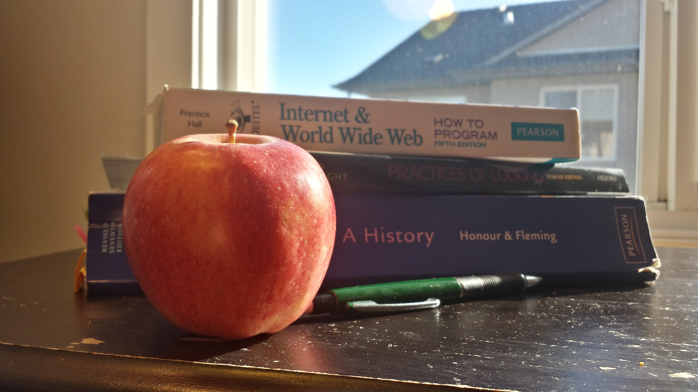
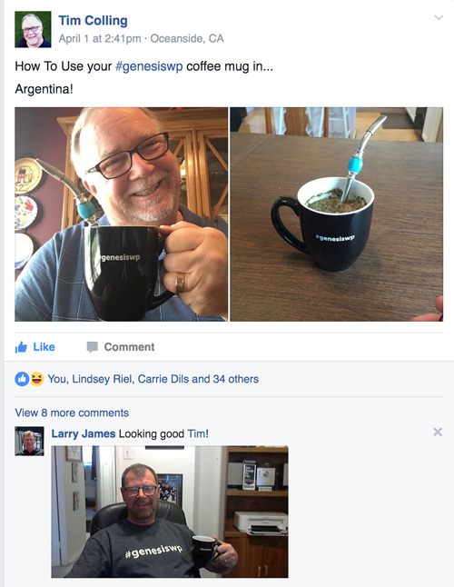

Photo by Pixabay
This Week in Genesis is from guest editor, Tara Claeys, who spent the week with her eyes glued to #genesiswp on twitter to bring you:
- A few new themes worth checking out
- A great selection for the weekly showcase
- A handful of tutorials and code snippets
- On-going activity for Genesis Month from Know The Code
- Conversations about Genesis Swag!
Themes
Carrie Dils teases about an update to Utility Pro, with new commits from well-known Genesis developers
Getting ready to release an update to Utility Pro theme this week. Welcoming 2 new committers in 2016 – @jdelia & @gscoolidge! #genesiswp
— carrie dils (@cdils) April 4, 2016
WPMgmt Co released Day Four Theme
Free Download: Day Four #theme for #GenesisWP https://t.co/Ol9gAVLcTR
— WPMgmt (@WPMgmtCo) April 7, 2016
Wes Straham released an update to his Optimal Theme
The new Optimal Theme is now available! – https://t.co/P5VCRtCxLn
What do you think?#genesiswp #wordpress pic.twitter.com/IgUiUErus7
— Wes Straham (@WesStraham) April 6, 2016
Sellfy is offering its Magnus7 theme for free
hey I got freeGenesisChildTheme For Free You can also Check more here https://t.co/iIKS80aH6q #GenesisWP @magnus7lab https://t.co/fgEEMKTumN
— saikrishna (@bsai14341) April 7, 2016
Web Savvy Marketing announced a theme for Psychologists and Counselors, Kathleen
Website Therapy for Psychologist and Counselors https://t.co/z5IzpHNNrc #genesiswp #wordpress
— Rebecca Gill (@rebeccagill) April 7, 2016
…and Davinder Singh on To The Geek shares a listing of 3rd party shops offering Genesis Child Themes.
All the Genesis Themes goodness #genesiswp https://t.co/8bQfury9Fi
— Davinder Singh (@idavinder) April 7, 2016
Showcase
RoadWarrior Creative launched a colorful site for Tommy’s SuperFood
New #genesiswp #WordPress #website for @TommysSuperfood This project made us hungry! https://t.co/gGxHRivJBP pic.twitter.com/GpPXLImY1A
— RoadWarrior Creative (@roadwarriorwp) April 1, 2016
Stephanie Hellwig launched a new site for Mye De Leon using her Sherri theme.
Excited to launch this site https://t.co/uOrJtExJn6 using the Sherri theme https://t.co/3lb6u43CkU #genesiswp
— Stephanie Hellwig (@stephanehellwig) April 5, 2016
Callia Web presents a website refresh for Charlotte’s Kitchen
Nothing like a little site refresh for one of our first clients. New #genesiswp site for @CharlotteKDiary at https://t.co/tHfHFKEumX
— Callia Web (@CalliaWeb) April 6, 2016
A sunny new site from Claire Lobel for Advance in IT
New recruitment website launched today https://t.co/2CXuNdp8vp #genesiswp (parallax help from @srikat) pic.twitter.com/KxHbjrodlJ
— Claire Lobel (@clairelobel) April 6, 2016
Sharon Hujik launched a fun site (love the url!) for Cha Ching On A Shoestring
Pleased to launch this custom #genesiswp design for https://t.co/SFwKs8g8ob Always love working w/ @KaleyatChaChing! Blog is 7 yrs young!
— Sharon (@SharonHujik) April 7, 2016
… and to toot my own horn … A long-awaited website refresh for Arlington Food Assistance Center (AFAC) by my new partnership, nice work,llc includes some pretty cool functionality to allow users to create their own fundraising campaigns, using the Give plugin.
Thrilled to launch https://t.co/NYXEYR7CbN Custom campaigns w/ customization of @GiveWP by @onebigidea #genesiswp @AFACtweets @design_tlc
— nice work (@getnicework) April 7, 2016
Podcasts
Carrie Dils talked with Brandy Lawson (a.k.a. TekGrl) about masterminds and the importance of relationships in business on OfficeHoursfm .
I’m live with @TheTekGrl! Tag your questions with #officefm https://t.co/UBe2uGeTCd
— Office Hours Podcast (@officehoursfm) April 7, 2016
Best of the rest
Know the Code kicked off Genesis Framework Month with a Developer’s Guide to Customizing Genesis! We may be tasked with learning Javascript deeply this year, but learning Genesis this month might be more fun! Upon the conclusion of the series, Pro members will build a Developer’s Genesis Starter Theme. (Sign up for the yearly Pro Plan membership using this special discount code SCBALQP0BN and receive 20% off your first year’s subscription price. But hurry up, as this discount is only good until April 8, 2016 – that’s today!)
We love #GenesisWP. April is Genesis Month. We will thoroughly explain it & have some hands-on Labs. Check it out: https://t.co/46YzxOpV2r
— Know The Code (@KnowTheCodePro) March 30, 2016
Brian Gardner talks about using Genesis for photography websites for Imagely
Why Photographers Should Use The Genesis Framework — https://t.co/PEJfxN1dMf via @imagely #genesiswp
— Brian Gardner (@bgardner) April 5, 2016
Tutorials
from Lindsey Riel
How to Enable #Pinterest Rich Pins With Genesis • #WordPress #genesiswp #webdesign #blogging #BloggingGals https://t.co/c7rPsDZD8x
— Lindsey Riel (@lindseyriel) April 6, 2016
from BobWP
I have a few of these on my blog >> Genesis Child Theme Tutorials on BobWP https://t.co/fggPGfl8Ki #genesiswp pic.twitter.com/QzyY9DIxVX
— BobWP (@bobWP) April 4, 2016
from prolific Sridhar (what would we do without him?!)
Removing the Page Title from Front page in Centric Pro:https://t.co/NY8lNwJzUC#GenesisWP pic.twitter.com/R3SmGnGS5Z
— Sridhar Katakam (@srikat) April 2, 2016
Full width Soliloquy in Showcase Pro:https://t.co/IShd5EAi2Y pic.twitter.com/4fpRGqygEX
— Sridhar Katakam (@srikat) April 6, 2016
Featured, Popular and Latest Posts tabs in Genesis using jQuery UI:https://t.co/WnJwY7aDSy pic.twitter.com/gn7TxYIzmf
— Sridhar Katakam (@srikat) April 5, 2016
Filterable Portfolio in Digital Pro: https://t.co/tQ6ls9Rodm pic.twitter.com/McAbAlcksh
— Sridhar Katakam (@srikat) April 5, 2016
Sridhar also shares his Genesis Code Snippets
I also share my personal collection of code here: https://t.co/KPjEnarqDy @jpetersen @JanHoekdotCom
— Sridhar Katakam (@srikat) April 5, 2016
… to go along with Clips, sharing an easy – and free – code snippet that vertically middles the excerpt in the Genesis Responsive Slider on most Genesis child themes. Works for both slide and fade effects.
New Clip! Vertically middle the excerpt in Genesis Responsive Slider on #genesiswp themes – https://t.co/gNEqGJSVvD pic.twitter.com/mtxclWjW99
— Jon Barratt (@KrolynStudios) April 7, 2016
Finally, always nice to see Genesis fans around the world enjoying their #genesiswp swag!

Thanks to Nick Davis for letting me participate in this great weekly Genesis Round Up! It is always an honor and a privilege.
PS A little bird (named Jesse Peterson) told us Andrea Rennick celebrated her birthday this week. Happy Birthday, Andrea!
Happy birthday, @andrea_r! #genesiswp
— Jesse Ⓦ Petersen (@jpetersen) April 4, 2016
PPS Speaking of Jesse Peterson, this is not fresh news, but if you haven’t already watched this episode of the WPCrowd, it is a great discussion of Genesis theme development with Jesse and Theresa Jennings.